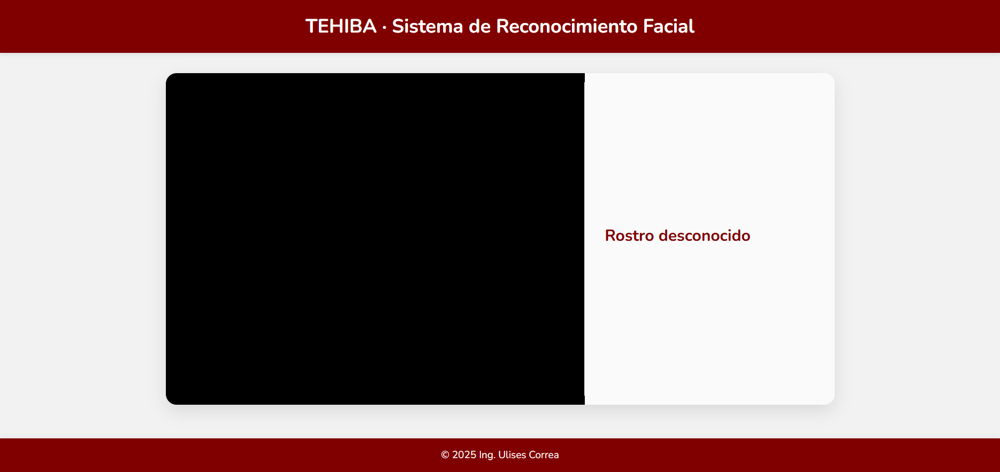

My Personal Projects

Real-Time Facial Recognition System (TEHIBA)
Web-based system built with Flask and OpenCV for real-time facial recognition using a webcam. It detects and identifies known individuals by comparing live input with stored images.
The system features a responsive web interface that displays detected faces along with relevant user information, updated dynamically in real time.
Known faces are managed through a known/ directory, allowing easy scalability by adding new users to the system.
Tech Stack: Python, Flask, OpenCV, JavaScript
View More